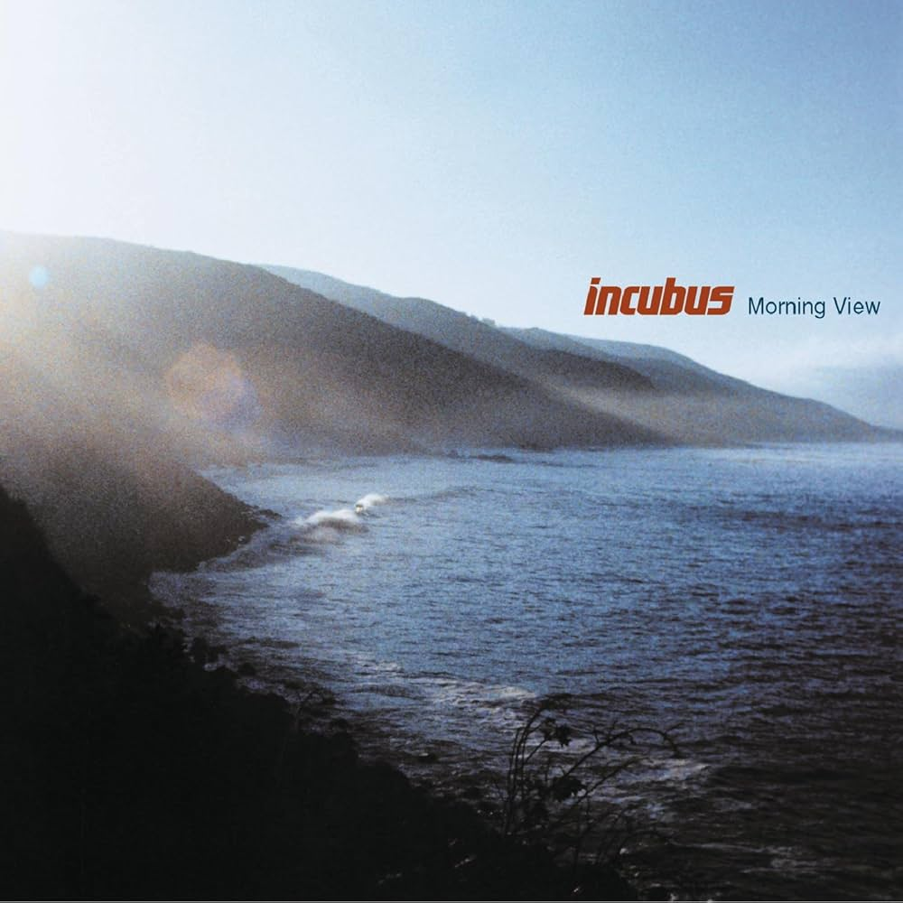
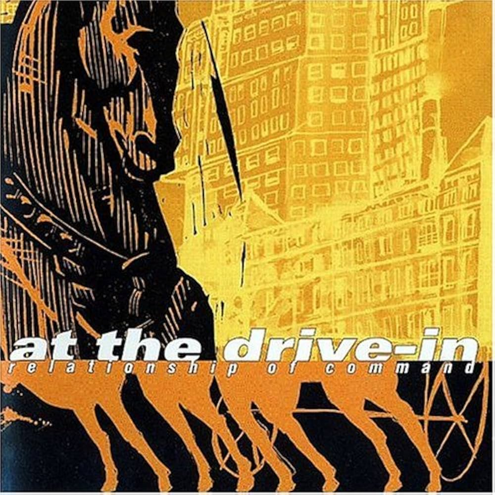
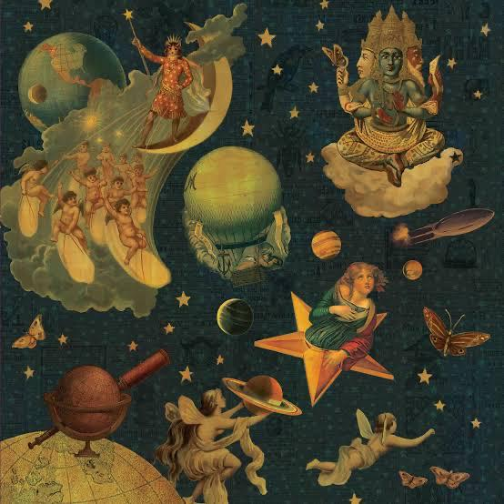

About section
Hello! My name is Grayson, I am a Senior (though credit and requirement wise a junior). I am a student at TAMUCC studying Computer Science with a concentration in Cyber Security. I started computer Science my second semester of my second year and even then I couldn't take any related coursework. So I have only been taking computer science classes since the last fall semster (2025) my junior year, and it has been a interesting experience.
I really do love this major and all of the wonderful things I get to be apart of and learn. So far the most difficult class has been computer architecture... Which was a struggle but we made it through! However, even though it was a very hard course, I learned alot and became a better student from taking that class.
Enough of computer architecture. Let's talk about Internet Programming. This is a very cool course so far and I have already learned just a bit more about how the web works! Very interesting stuff. For instance, I did not know that you could view the source code of a website by using the keybind Ctrl + u, or that the HTML language does actually have some nuance behind it that makes it more useful than just being super basic markup type of deal.
Interests section
I have quite a few interests, but I can just list them out for the purpose of the page.
Music
- LOATHE
- Glasjaw
- Incubus
- At the Drive-In
- Hail the Sun
- Aphex Twin
- Nine-Inch-Nails
- The Smashing Pumpkins
- And more of this variety...




Nature
I love nature and the things that come with it, I very much enjoy the beach, I used to frequent the beach but now that classes have picked up I have not been able to go very often, and that is okay! It will always be there.
But I really love mountains, mountains and snow are some of the most wonderful things to me. They are some of the most magnificent things that exist on the planet as they are so large. You can see them froma hundered miles away and it looks big even from that distance! And the way that snow falls is so graceful. If anyone reading this gets a chance to sit down in snow or ever go to a place with heavy snow fall you will see. When snow falls it makes everything else very silent and not a deafening silence but a very calm silence.
I really like how grass feels (ikr...shocker), the way that water feels and how unbeliveably dangerous water is. It is very easy to get swept away even at the beach in Corpus, no matter how strong of a swimmer you are! It makes me wonder how powerful the oceans are. The sun is also a very wonderful and brilliant source of energy just like water, it is very intriging how being in the sun literally makes you feel better no matter what too. It has it's own magic that works on us.
That is all I will say for now, I am not trying to be dark and mysterious but I don't like revealing much about myself just for the sake of privacy. Here are some pictures of the wonderful things I like.